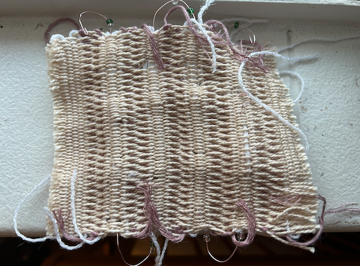
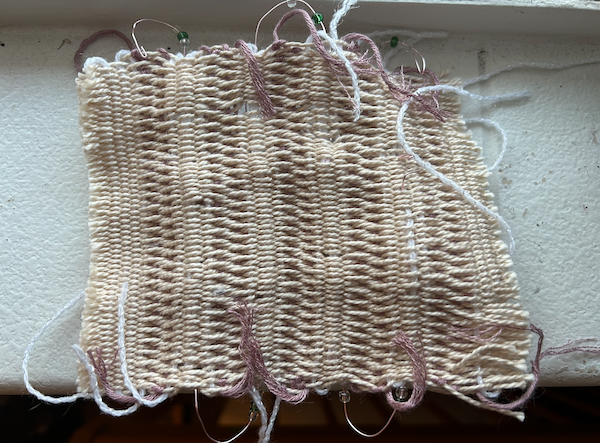

final project
This assignment was completed on December 11, 2023
For my final, my explorative question was "how can I weave a cloth that can help ease sensory processing challenges?" My heuristic was that I would like to work with wire and create different touch surfaces.
sample one

For my first swatch, I wanted to create a sort of looping selvage that I would bead made of wire. I was inspired by the wire children’s toy where the child would move wooden blocks from one end of the wire to the other. I wanted to create a more refined adult version through cloth.
My first key point was when I had to decide for the swatch what type of structure I wanted to use. I knew I wanted to experiment with structures to create my touch surfaces, but I wasn’t sure if the wire would mess with it, so I decided to go with a twill structure to start off. I chose this because it had more visual interest than tabby, but a basic stitch to start.
The second key point was deciding how dense I wanted my swatch to be. I wanted there to be room to feel the wire, so I gave the swatch some room between fibers. I wanted the wire to clearly be there and incorporated into the swatch, which I did end up accomplishing through my decision to keep the swatch airy and open.
My last key point was deciding how to end the wire segments. I knew that because the swatch was meant to be touched and handled in many ways (including being bent, turned, brushed, etc.) I wanted to make sure that no one poked or hurt themselves when handling the swatch. I decided to bend the wire in on itself so there wasn’t a way to snag or poke.
- sample two -
For my second swatch, I wanted to iterate off of my first looping selvage, and move these loops into other places of my swatch to create a 3D effect.
My first key point in my second swatch was deciding what type of color I wanted my weft yarn to be. I wanted the eye to be drawn to the looping wire that is coming out of the swatch, so I decided to go with plain white yarn because the alternating color warp was enough to give the cloth itself visual interest.
The second key point was deciding how many loops of wire I wanted in the swatch. I knew that if I had too large of a loop, the structure of the wire would be much looser and I wanted it to be secure and not as movable. I decided to create multiple smaller loops so that there were plenty of places to move beads.
My last key point was deciding what type of structure I wanted for my swatch. I knew that this structure was going to be used to secure looser wire into it, so I wanted a structure that would have as much surface area covered as possible. I decided to go with tabby in order to see if the structure was enough to hold the wire in place.
- sample three -


For my third swatch, I wanted to pause on the wire and start thinking more about the different textures and touch surfaces that I wanted to implement in my cloth.
My first key point in my third swatch was deciding on what type of structure I wanted to use for my cloth. I knew I wanted one that would be satisfying to touch. I landed on a mixture of a basket twill, because I wanted it to have large blocks of yarn that would be interesting to touch and feel the dips and curves.
The second key point was deciding if I wanted two different alternating weft colors or one solid color throughout the whole swatch. I was attached to both ideas, but I ended up deciding on two different weft colors. This was because not only did I want my swatch to be interesting texturally, I also wanted it to be interesting visually. Due to the fact that I did not incorporate wire into this swatch, I decided that two colors would not be too much.
My last key point was deciding what extra visual interest I wanted in my swatch. I knew that twill/basket weave was interesting, but not interesting enough to warrant an entire swatch. I knew I wanted to do my own version to add a graphic element. I decided that I wanted to create a gradient of small stitch to large checkers back down to small stitch again. I wanted to recreate optical illusions that make things look curved, which I was extremely happy about how it looked in a cloth medium.
- sample four -
 

For my last swatch, I wanted to use everything that I had learned from my past three swatches to created a cloth that I would recreate for my final swatch.
My first key point in my third swatch was deciding what type of wire work that I wanted to use. I had tried looping beaded selvages as well as loops of wire as supplemental wefts that floated above the swatch. I loved both of those swatches, so I decided to incorporate both as one long weft that wove in and out of the cloth so that I could easily have both elements within the cloth.
The second key point was deciding what type of structure I wanted to choose for the swatch. I knew that in my structure, I wanted enough surface area coverage so that it would anchor the wire in place, while also creating interesting touch surfaces. I decided on a twill-tabby switch. The tabby was good for creating an easy path to anchor the wire, while the twill created an interesting texture to touch on the back of the cloth.
My last key point was deciding what colors I wanted to use for the cloth. I chose a pink wire that I thought was pretty, and so I wanted to use a contrasting color for the beads. I chose pink and white yarn for the final swatch so that the wire didn’t stand out too much, because I wanted the green beads to be a call to action almost. I want the contrasting color to prompt the use to touch and interact with the cloth.
- reflection -
As a whole, this was my favorite project that I have done this year. I have always really loved wire and wire craft/art, so I was super excited that I could incorporate it into my final for this class. Additionally, as someone who has to work with their neurodivergency and sensory processing disorders, I was excited to try to think about ways that textiles could be part of care and mental health. While my final was not perfect, I think that it is an amazing start and I would like to work on these ideas in the future. I would maybe make different color ways that are less muted, and I would also work on the 8S-2 loom for the future because I preferred the alternating color warp. Overall, I am really proud of my work, and I would love to continue working and implementing the skills that I learned in this class into my textile work in the future!